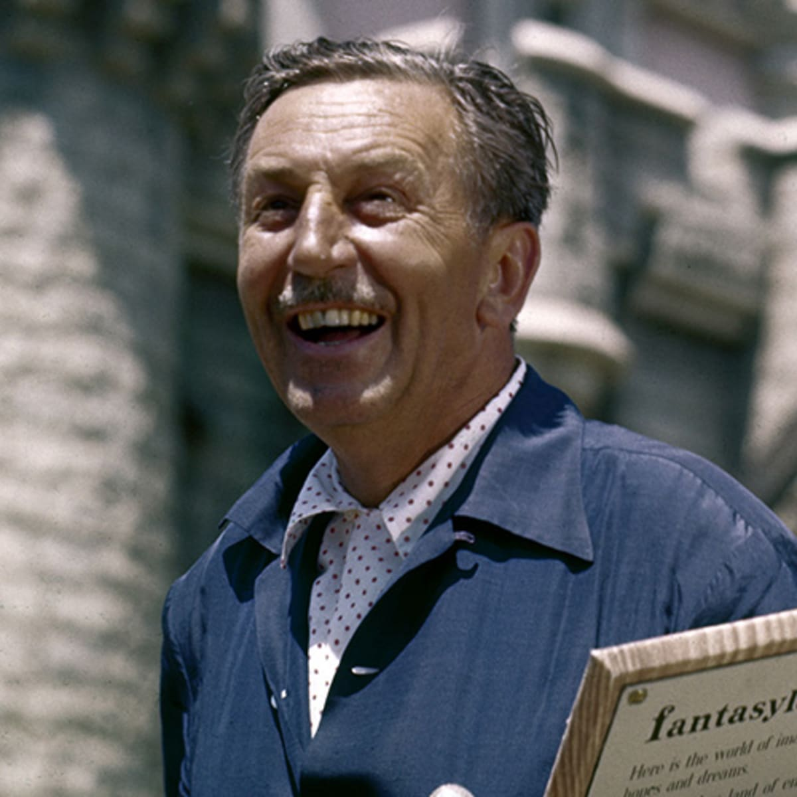

Disney Princess, also called the Princess Line, is a media franchise and toy-line owned by The Walt Disney Company. Created by Disney Consumer Products chairman Andy Mooney, the franchise features a line-up of female protagonists who have appeared in various Disney franchises.
Ariel is a fictional character in Walt Disney Pictures' 28th animated film The Little Mermaid. Ariel is voiced by Jodi Benson in all official animated appearances and merchandise. She is fourth in the Disney Princess lineup, the first nonhuman princess, and the only princess to become a mother to her own child.
Anna of Arendelle is a fictional character who appears in Walt Disney Animation Studios' 53rd animated film Frozen and its sequel and 58th animated film Frozen II. She is voiced by Kristen Bell as an adult.
Belle is a fictional character in Walt Disney Pictures' 30th animated feature film Beauty and the Beast. Originally voiced by American actress and singer Paige O'Hara, Belle is the non-conforming daughter of an inventor, who yearns to abandon her predictable village life in return for adventure.
Cinderella is a fictional character who appears in Walt Disney Productions' 12th animated feature film Cinderella. In the original film, Cinderella is voiced by American singer and actress Ilene Woods.
Walter Elias Disney was an American entrepreneur, animator, writer, voice actor, and film producer. A pioneer of the American animation industry, he introduced several developments in the production of cartoons.
